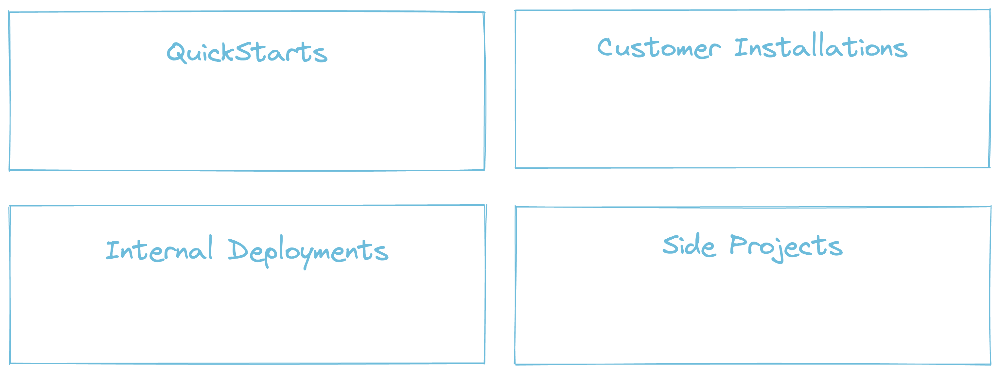

A safer curl | bash for the cloud
Carolyn Van Slyck
Principal Software Engineer at Microsoft
Porter Maintainer
curl https://example.com/install-it-quick.sh | bash
Why we secretly like curl | bash
- Instant gratification
- No experience required
- High likelihood of success
Would you give an internet rando root on your laptop?
The code you read may not be the code you run

idontplaydarts.com/2016/04/detecting-curl-pipe-bash-server-side
In checksums we trust, right?
- Download the script
- Compare the checksum
- Read the script
- Run the script
But what if I really want to?
- Reading is hard 🤦♀️
- Cloud Native deployments can be pretty complex
- I want it to be easier for people to try out my project
Let's make those one-liners safe!
- Isolate the installer
- Automatic digest/signature checking
- Insight into what the installer will do
Porter

Package your application artifact, client tools, configuration and deployment logic
together as a versioned bundle that you can distribute,
and then install with a single command
Let's install TabbyCats Tracker!
tabbycats.club
TabbyCats Tracker
 |
Demo: Use a bundle
Demo: Make a bundle
Are we safer? Yes!
- ✅ Isolate the installer
- ✅ Automatic digest/signature checking
- ✅ Insight into what the installer will do
Bundles borrow security features from existing tooling
- Runs in a container
- Distributed via OCI Registry
- Porter compares digests for you
- We are working on signing support
Bundles can explain themselves
- Credentials
- Parameters
- Components Used
Could it replace curl | bash? Sometimes!
- 🤷♀️2-3 commands to install first time, 1 command going forward
- ✅ Same command regardless of what you are installing
- ✅ Magic installer that just works
Who would use this?
Try it out!
- porter.sh/quickstart
- porter.sh/learning
- Run porter create to make your first bundle
- porter.sh/author-bundles
- porter.sh/community
Thank you!